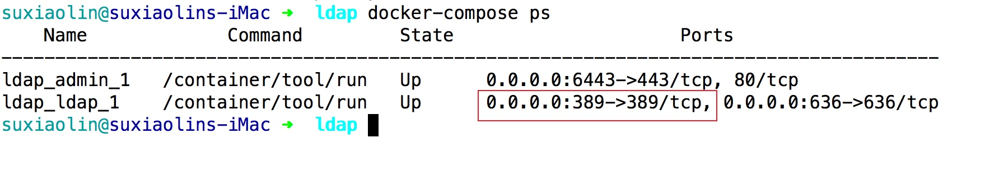
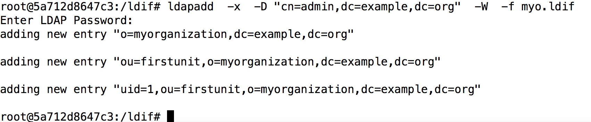
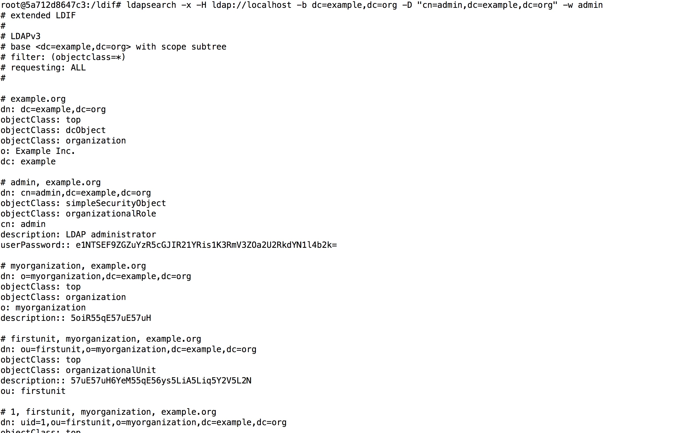
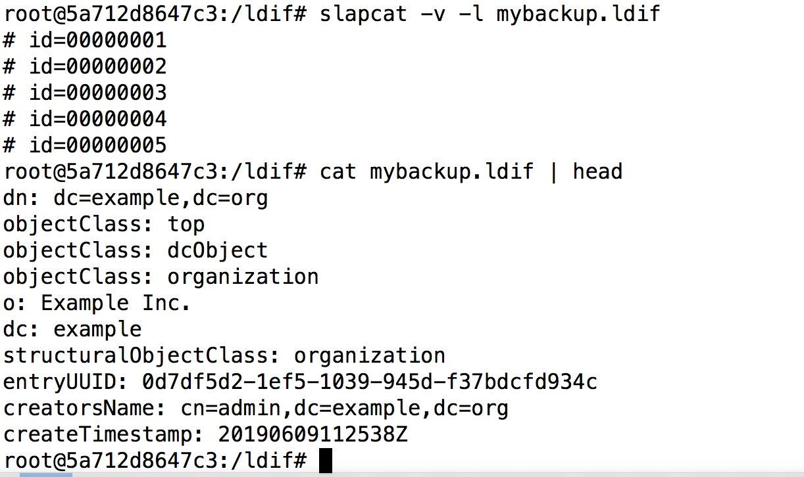
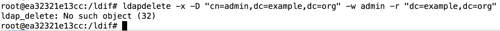
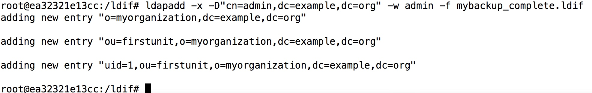
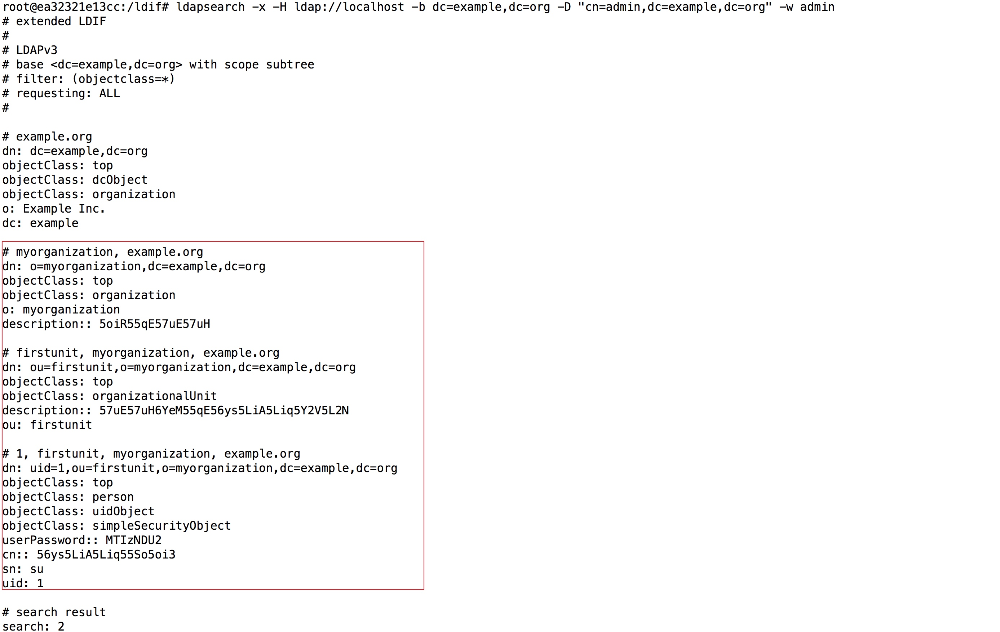

公司内的帐号系统一般使用openldap，openldap相对于把帐号存入mysql等关系数据库中开发和维护成本都比较低，所以openldap成了公司内帐号体系最合适的选择
可以通过下面的内容快速上手这个openldap帐号系统
名词概念
这个ldap里面使用了很多的别名，下面列出了常用的别名
dn: 区别名，类比mysql的主键id
cn: 常用名，类比用户的呢称（全名）
sn: 用户的姓氏
giveName: 用户名字(不包含姓)
dc: 所属域名，类比命名空间，一个用户可以存在在多个dc中
uid: 登录使用的名称
c: 所属国家，比如CN表示中国
ou: 所属组织
LDIF: openldap的数据描述格式，类比linux的/etc/passwd文件格式，使用固定的格式来描述包含的数据
dn:uid=1,ou=firstunit,o=myorganization,dc=example,dc=org
objectclass:top
objectclass:person
objectclass:uidObject
objectclass:simpleSecurityObject
userPassword:123456
cn:第一个用户
sn:su
uid:1
telephoneNumber：13288888888
注意：很多objectClass都会提供额外的字段，比如上面的telephoneNumber字段就是person这个objectClass提供的
objectClass列表参考：http://www.zytrax.com/books/ldap/ape/#objectclasses
可以通过定义schema创建新的objectClass: http://www.openldap.org/doc/admin24/schema.html
搭建openldap服务器
可以使用这个docker一键启动openldap服务器，参考：https://github.com/osixia/docker-openldap
编写docker-compose.yml如下
version: '3'
services:
ldap:
image: osixia/openldap:1.2.4
environment:
- TZ=PRC
ports:
- 389:389
- 636:636
admin:
image: osixia/phpldapadmin:0.8.0
volumes:
- ./data/admin/config:/container/service/phpldapadmin/assets/config
ports:
- 6443:443
links:
- ldap
然后启动
docker-compose up -d
使用命令docker-compose ps可以查看启动效果

可以看到这个ldap服务器已经在389端口监听了
这个docker创建的管理员帐号是：cn=admin,dc=example,dc=org 密码：admin
默认的域名是：dc=example,dc=org
组织架构
用户体系一般体现了公司的组织架构，常用的组织架构有下面两种
- 互联网命名的组织架构：根节点为国家，国家下为域名，域名下为组织/组织单元，再往下为用户
- 企业命名的组织架构：根节点为域名，域名下面为部门，部门下面为用户
下面就用企业命名的组件架构举例
命令行操作
创建数据
构建ldif文件，比如myo.ldif
dn:o=myorganization,dc=example,dc=org
objectclass:top
objectclass:organization
o:myorganization
description:我的组织
dn:ou=firstunit,o=myorganization,dc=example,dc=org
objectclass:top
objectclass:organizationalUnit
description:组织里的第一个单位
dn:uid=1,ou=firstunit,o=myorganization,dc=example,dc=org
objectclass:top
objectclass:person
objectclass:uidObject
objectclass:simpleSecurityObject
userPassword:123456
cn:第一个用户
sn:su
uid:1
然后导入到ldap服务器里面
docker-compose exec ldap bash
ldapadd -x -D "cn=admin,dc=example,dc=org" -W -f myo.ldif
操作效果如下

可以看到数据已经成功导入了
搜索数据
可以使用ldapsearch命令查找数据，比如查找这个域名: dc=example,dc=org 下的所有数据
ldapsearch -x -H ldap://localhost -b dc=example,dc=org -D "cn=admin,dc=example,dc=org" -w admin
操作效果如下

可以看到查询成功执行了
备份数据
使用slapcat -v -l mybackup.ldif进行备份
操作效果如下

清空数据
可以使用ldapdelete -x -D "cn=admin,dc=example,dc=org" -w admin -r "dc=example,dc=org"命令清空example,dc=org下的所有oepnldap的数据
操作效果如下：

注意并没有删除dc=example,dc=org这条记录
恢复数据
注意：恢复前需要把备份文件中的这些字段先删掉
- creatorsName
- modifiersName
- modifyTimestamp
- createTimestamp
- entryUUID
- entryCSN
- structuralObjectClass
然后删掉这条记录dn: dc=example,dc=org
使用命令ldapadd -x -D"cn=admin,dc=example,dc=org" -w admin -f mybackup.ldif进行导入
操作效果如下

使用ldapsearch命令进行验证

可以看到数据已经成功导入了
客户端
ldap目前有三个客户端可以选择
- jxplorer: http://jxplorer.org/
- Apache Directory Studio
- phpLDAPadmin
jxplorer有中文界面，并且简单容易上手，Apache Directory Studio功能强大，建议先使用jxplorer上手，然后再使用Apache Directory Studio进行操作，phpLDAPadmin可以自行了解
程序客户端
- java参考：https://docs.spring.io/spring-ldap/docs/current/reference/
- php参考：https://github.com/Adldap2/Adldap2
- go参考：https://github.com/go-ldap/ldap
一些注意的点
定义有密码用户使用simpleSecurityObject这个objectClass，比如
dn: cn=suxiaolin,dc=example,dc=org
objectClass: organizationalRole
objectclass: simpleSecurityObject
cn: suxiaolin
userPassword:123456
这个userPassword字段的值就是用户密码